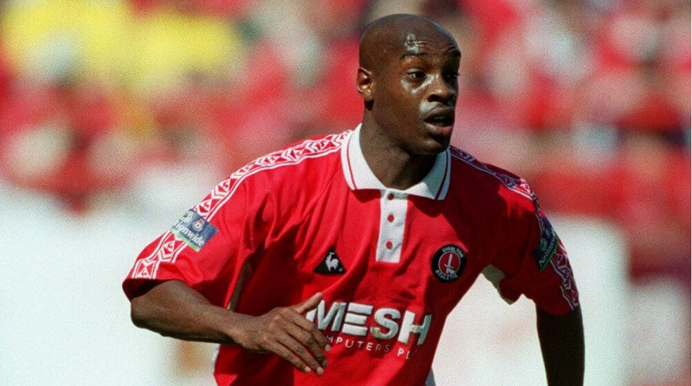

4 Genuine Football Wonderkids
Rufus was a born-again Christian and respected one-club man who became a Hall-of-Famer and ambassador for his local club, but he ended up disgraced after incarceration for fraud. His former manager regarded Rufus as one of the best players not to receive an England cap while supporters hailed his charity work to help disadvantaged groups, but it was uncovered that he abused his position to enrich himself.
Rufus was born only three miles from Charlton’s stadium, The Valley, in a South-East London borough called Lewisham. Like Nathan Ashton, he joined the Addicks as a teenager in the early 1990s and was on the first team by 1994. The centre-back made his Charlton debut against Derby County on October 29, coming off the bench as a 19-year-old - the Addicks drew the game 2-2.